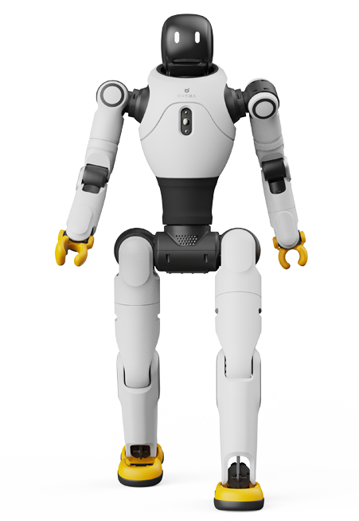

PRODUCT PROFILE / 配置资料
灵犀 X2Ultra
智元机器人 · 双足人形 · 状态待核实
紧凑型交互平台。Ultra 的雷达、深度感知和开发支持独立于 X2 基础型号。

完整规格与依据
身体规格
- 身高
- 131 cm 已核对原文 · 厂商资料
约值
本项资料核验 2026-10-23 - 整机重量
- 39 kg 已核对原文 · 厂商资料
约值
本项资料核验 2026-10-23 - 自由度
- 30 DoF 已核对原文 · 厂商资料
尚无足够资料；未知不等于零或明确不支持。
本项资料核验 2026-10-23 - 末端执行器
- 选配 OmniHand / OmniPicker 已核对原文 · 厂商资料
末端执行器不是标配
本项资料核验 2026-10-23
运动与操作
- 操作负载
- 3 kg 已核对原文 · 厂商资料
特定姿态最大值，不含末端执行器；全范围 ≤1 kg
本项资料核验 2026-10-23 - 移动速度
- 1.8 m/s 已核对原文 · 厂商资料
官方最高值；典型 ≤0.8 m/s，实验室 ≤2 m/s，口径不可混用
本项资料核验 2026-10-23
电池与工作
- 工作时间
- 2 h 已核对原文 · 厂商资料
以 0.5 m/s 步行，约值
本项资料核验 2026-10-23 - 电池能量
- 500 Wh 已核对原文 · 厂商资料
约值
本项资料核验 2026-10-23 - 电池容量
- 待核实
【待继续采集】灵犀 X2 Ultra的电池容量尚未完成专项深挖。所链仅为产品入口，不是该参数未公开的证明；后续须核对该代手册/配置表或报价，不能从其他代际或零值补齐。
专项核验尚未完成；相关链接不表示厂商从未披露。
感知与开发
- 感知配置
- 激光雷达、RGB-D、前双目 RGB、后 RGB、头部触摸 已核对原文 · 厂商资料
尚无足够资料；未知不等于零或明确不支持。
本项资料核验 2026-10-23 - 计算平台
- RK3588 ×2 + Orin NX（157 TOPS） 已核对原文 · 厂商资料
尚无足够资料；未知不等于零或明确不支持。
本项资料核验 2026-10-23 - 二次开发
- 支持 已核对原文 · 厂商资料
官网列为支持二次开发
本项资料核验 2026-10-23
采购信息
- 美元报价
- 待核实
【待继续采集】灵犀 X2 Ultra的美元报价尚未完成专项深挖。所链仅为产品入口，不是该参数未公开的证明；后续须核对该代手册/配置表或报价，不能从其他代际或零值补齐。
专项核验尚未完成；相关链接不表示厂商从未披露。 - 人民币报价
- 待核实
【待继续采集】灵犀 X2 Ultra的人民币报价尚未完成专项深挖。所链仅为产品入口，不是该参数未公开的证明；后续须核对该代手册/配置表或报价，不能从其他代际或零值补齐。
专项核验尚未完成；相关链接不表示厂商从未披露。